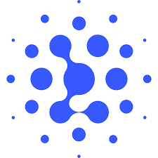
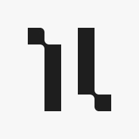

載入中...

我對工作的真實原則
- 時間自由（成果導向）
- 穿著自由（專注成就）
- 在台灣賺全世界的錢 (國際化)
機器學習
讓電腦從資料中學習。包含但不限於「監督式」與「非監督式」兩大類型。
深度學習 (Deep Learning)
使用複雜的多層神經網路。此技術包含但不限於監督式和非監督式學習任務，能夠處理更複雜的模式。
生成式 AI (Generative AI)
基於大型深度學習模型，專注於「創造」全新的內容，而不僅是分析或預測。

AI 模型開發的大競賽時代
| 國家 | 企業/機構 | 模型數量 | 代表模型 |
|---|---|---|---|
|
🇺🇸 US |
 Google + DeepMind
Google + DeepMind
|
7 | Gemini 2.5 Pro, Nano Banana |
 OpenAI
OpenAI
|
7 | GPT-5, Sora | |
 Anthropic
Anthropic
|
2 | Claude 3 | |
|
🇨🇳 CN |
 Zhipu AI | 7 | GLM-4.6 |
 Alibaba
Alibaba
|
6 | Qwen2，Qwen2.5 | |
 DeepSeek
DeepSeek
|
4 | DeepSeek-V3 | |
|
🇪🇺 EU |
 Mistral AI
Mistral AI
|
3 | Ministral |
|  Isomorphic Laboratories | - | AlphaFold 3 |
數據來源：Epoch AI